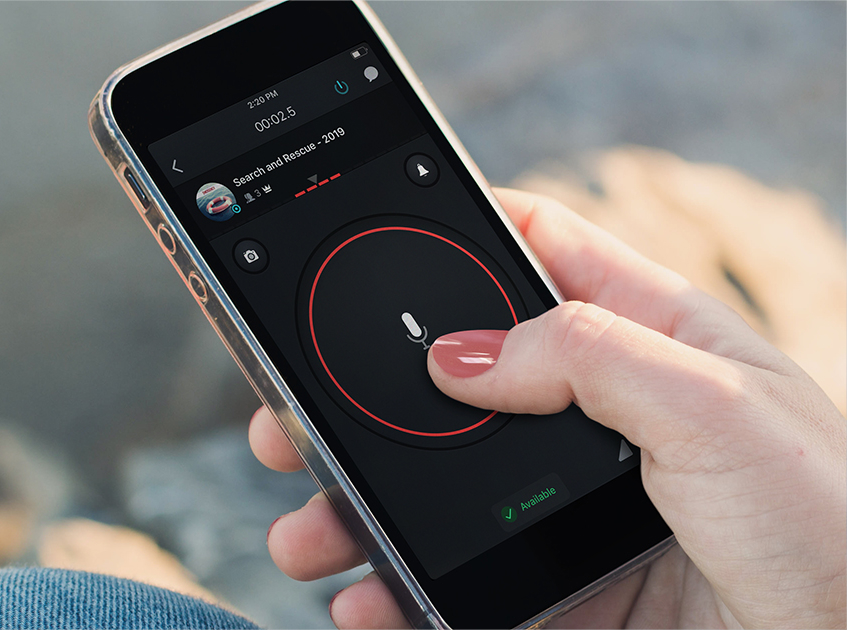

La red de Radio Vía Internet (Romeo Víctor India) nace como una red independiente en
castellano disponible para cualquier persona amante de la radio.
Es un intento de trasladar al mundo digital actual el espíritu de la radioafición más tradicional,
sin límite geográfico. Para poder acceder no necesitas más que un dispositivo
(ordenador, teléfono, tablet, network radio...), acceso a internet y la aplicación
Zello.
Qué es Zello?
Zello es una aplicación walkie-talkie gratuita disponible para móviles y
ordenador.
Actúa como un complemento de las emisoras de radio
tradicionales y funciona de una manera similar. Dispone de canales diferentes donde
la gente comparte información y mensajes de audio a un grupo o en privado. También se pueden
compartir mensajes de texto, fotos y localizaciones.
Los canales pueden ser de acceso público o privado según como lo
hayan
configurado las personas que los crearon (administradores) y dentro de ellos, tanto la persona
que
administra como la que modera pueden enviar alertas de forma selectiva a miembros que lo deseen,
así como
rechazar o bloquear a usuarios no deseados.
